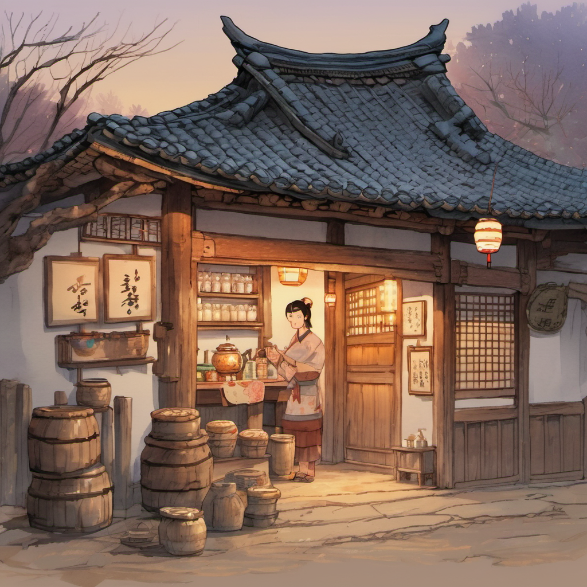
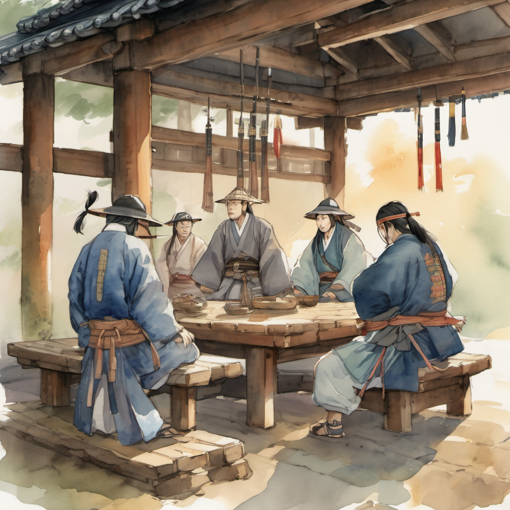
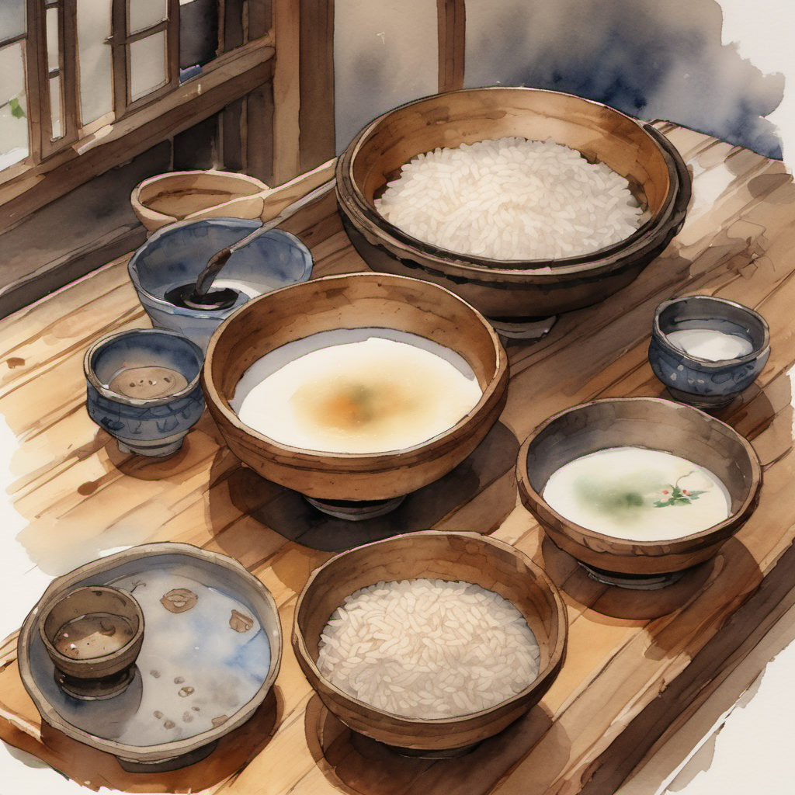
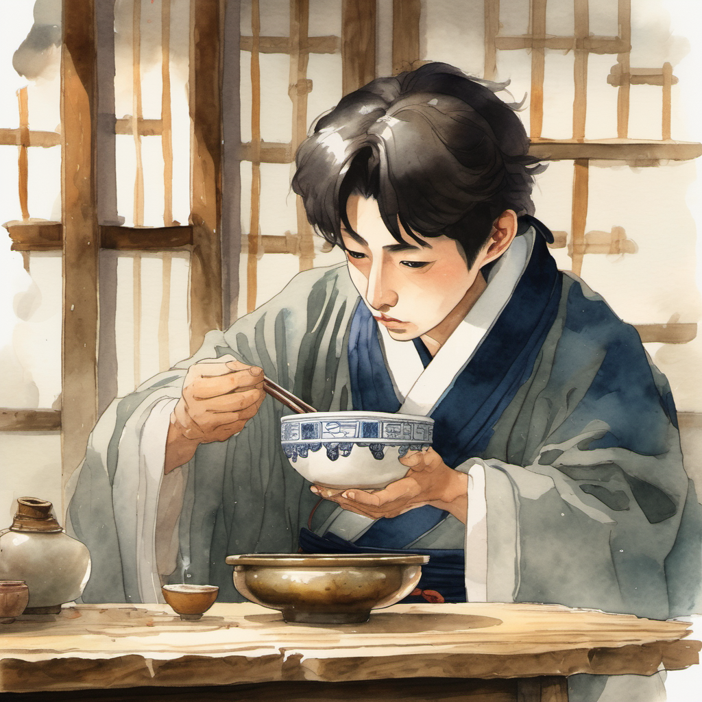
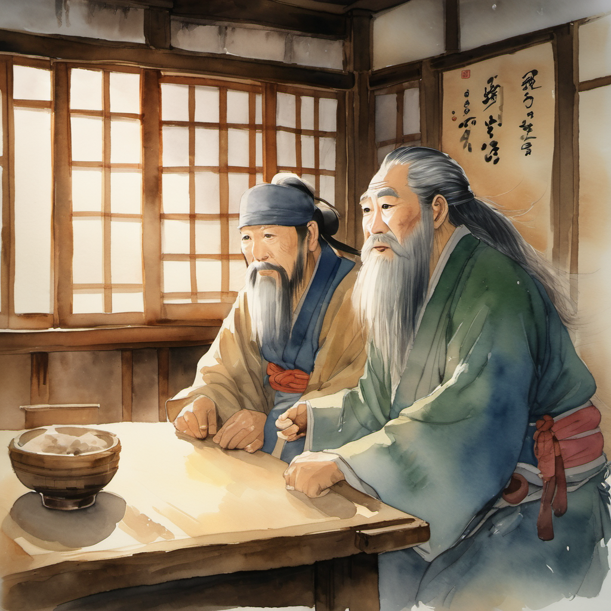
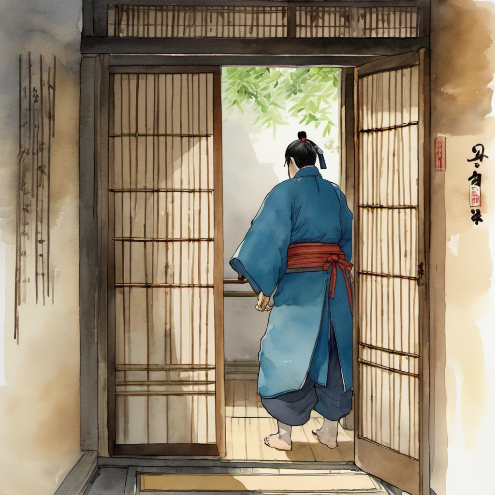
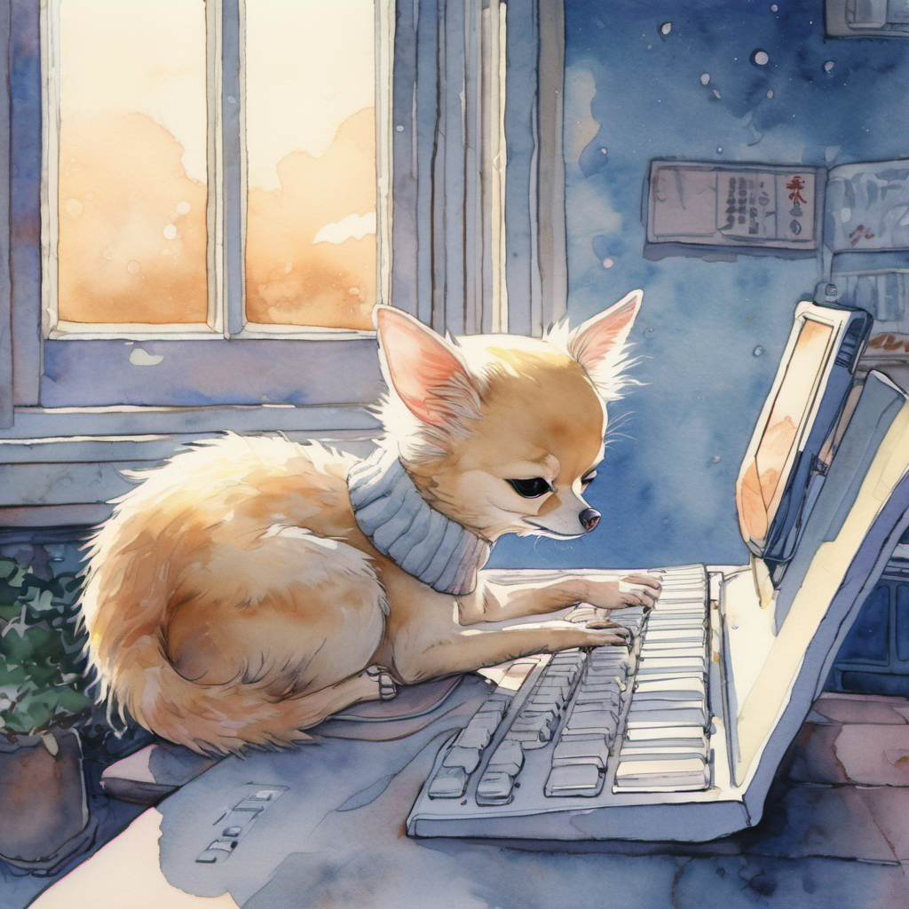

객잔 「반월」

산길 사흘이 지나고, 일행은 개성 외곽의 객잔에 도착했다.
객잔의 이름은 「반월(半月)」이었다. 김용 선생의 사조영웅전에서 곽정과 황용이 처음 만난 객잔의 그 분위기였다. 흙벽돌 + 짚 지붕 + 마당의 평상 + 평상 위의 막걸리 항아리. 그러나 객잔의 한 구석에는 — 지붕 처마 아래에 — 1990년대식 네온 간판이 한 줄 걸려 있었다. "막걸리 한 사발 → ₩2,000". 글리치였다.
무휼의 강원도 사투리는 정주의 마음을 한 번 찔렀다.
1권 1화의 메타 농담을 정주는 본 권에서도 잊지 않았다.
평상의 균형

객잔 마당의 평상에 일행이 앉았다. 무휼이 H빔을 평상 옆에 세웠다 — 평상의 한쪽이 H빔의 무게로 살짝 기울었다. 슬레이어가 작두를 평상의 다른 쪽에 세웠다 — 평상의 그쪽도 살짝 기울었다.
평상은 양쪽으로 기울어진 채로 균형을 이루었다.
막걸리 다섯 사발

객잔 주인이 막걸리 항아리에서 한 사발씩 떠 왔다. 다섯 사발. 그리고 — 이방원의 잔에는 막걸리 대신 — 청주가 들어 있었다.
객잔 주인은 청주 잔을 다시 가져갔다. 막걸리 한 사발을 새로 떠서 이방원 앞에 내려놓았다.
이방원의 첫 막걸리

이방원은 그 잔을 한 번 보고, 정주를 한 번 보고, 그리고 — 한 모금 마셨다. 그의 표정이 한 번 어그러졌다. 의심 많은 호랑이의 표정이 잠깐 — 인간의 표정이 되었다.
이방원은 잠시 침묵했다. 그리고 막걸리를 한 모금 더 마셨다. 두 번째 모금에서는 표정이 덜 어그러졌다. 의심 많은 호랑이가 — 막걸리에 대해서는 — 의심을 거두기 시작한 순간이었다.
객잔 주인 — 강호의 정보책

객잔 주인이 평상 옆을 다시 지나갔다. 그가 정주를 한 번 깊게 쳐다보았다.
객잔 주인의 눈빛이 한 번 깊어졌다. 김용 풍 객잔 주인의 흔한 톤. 객잔 주인은 단순한 주인이 아니라 — 강호의 정보책.
정주는 잠시 침묵했다. 사흘 전 — 일행이 벽란도에서 산길로 출발한 시점. 즉 무당파는 — 매화검수의 사형이 산길에서 매복하기 전부터 — 정주가 개성으로 올 것을 알고 있었다.
김용 선생의 강호 묘사로 옮기면 — "무림에는 발 없는 말이 천 리를 간다"의 정확한 응용. 그러나 본 작품의 세계관에서 그 "발 없는 말"은 — 글리치였다.
별실 1번 앞

정주와 이방원은 객잔 안쪽으로 걸어 들어갔다. 안쪽은 어둑했다. 흙벽 위에 — 또 한 줄의 글리치가 있었다. 작은 LED 디스플레이.
별실 2번은 아직 등록되지 않은 상태였다.
정주는 별실 1번의 문 앞에 섰다. 문 위의 발(簾)이 한 번 흔들렸다. 안쪽에서 — 한국 사극 풍의 깊은 목소리가 — 들려 왔다.
정주가 발을 한 번 들어 올렸다. 무당파의 첫 만남이었다.
도비, 인천 옥탑방

도비 신수는 인천 옥탑방에서 — 키보드 위에서 — 한 번 발바닥을 펼쳤다 다시 접었다. 잠은 깊었다. 그러나 발바닥은 — 어딘가의 신호를 — 한 번씩 받고 있었다.
(2권 3화 끝)